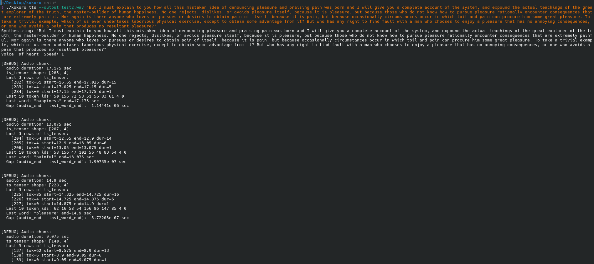
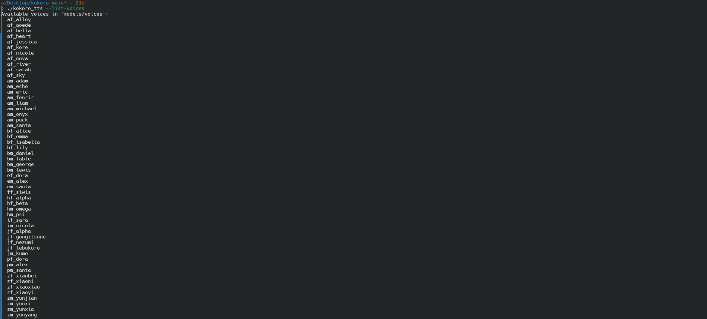

AI Pipeline — Kokoro TTS in C++
An offline, Python-free text-to-speech pipeline built from scratch.

Overview
This project reimplements the full Kokoro-82M text-to-speech pipeline in C++, including its grapheme-to-phoneme system built from scratch, so it runs entirely offline with no Python required at inference time. Given a string of text, it synthesizes natural 24kHz speech and writes a companion JSON file with per-word timestamps.
STAR Write-Up
- Situation
- Often times generated audio needs to be paired with a transcript including timestamps for integration with larger audio-visual experiences.
- Task
- Build a self-contained C++ command-line tool that runs Kokoro-82M from a traced model, reimplements its text-processing pipeline without Python, and reports accurate per-word timestamps alongside the audio.
- Action
- Reimplemented Misaki's grapheme-to-phoneme pipeline in C++ from scratch: a text normalizer for numbers, currency, ordinals, and abbreviations; a CMU Pronouncing Dictionary lookup with an espeak-ng IPA fallback for out-of-vocabulary words; and a tokenizer matching Kokoro's vocabulary. Used LibTorch to run a TorchScript trace of the model, split multi-sentence input into separate synthesis calls, and stitched the resulting audio and timestamps back together with correctly offset timing.
- Result
- A command-line tool that synthesizes 24kHz speech entirely offline, writes per-word timestamps to a companion JSON file, builds without requiring a CUDA toolkit, and supports switching voices at runtime.
Tech Stack
- C++17
- LibTorch
- CMake
- Python (model export only)
- espeak-ng
- TorchScript
- CMU Pronouncing Dictionary
Behind the Scenes
The pipeline turns raw text into audio through a sequence of independent stages — normalize, split into sentences, convert to phonemes, tokenize, run the model, then write out the audio and timestamps:
text │ ▼ TextNormalizer (numbers, currency, ordinals, abbreviations) │ ▼ sentence splitter │ ▼ G2P CMU dict lookup → ARPABET → tokens │ (espeak-ng IPA fallback for OOV words) ▼ Tokenizer pad with leading/trailing token, cap at 512 │ ▼ KokoroTTS model TorchScript trace: (input_ids, ref_s) → (audio, timestamps) │ ▼ WavWriter + JSON 24kHz float32 WAV + per-word timestamps
Each synthesis call returns timestamps like this, which made it possible to verify timing accuracy word by word during development:
[
{"word": "Hello", "start": 0.0125, "end": 0.4125},
{"word": "world", "start": 0.4625, "end": 0.9125}
]

